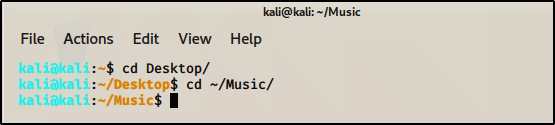

To move to spmewher else wothout using /full address of that folder/

Use double tab to see all options like after cd D
double tab

rmdir -remove directory
mkdir -make diectoryr
rm Downloads/test.txt :to remove file test.txt fomr downloads folder
to change password type
passwd